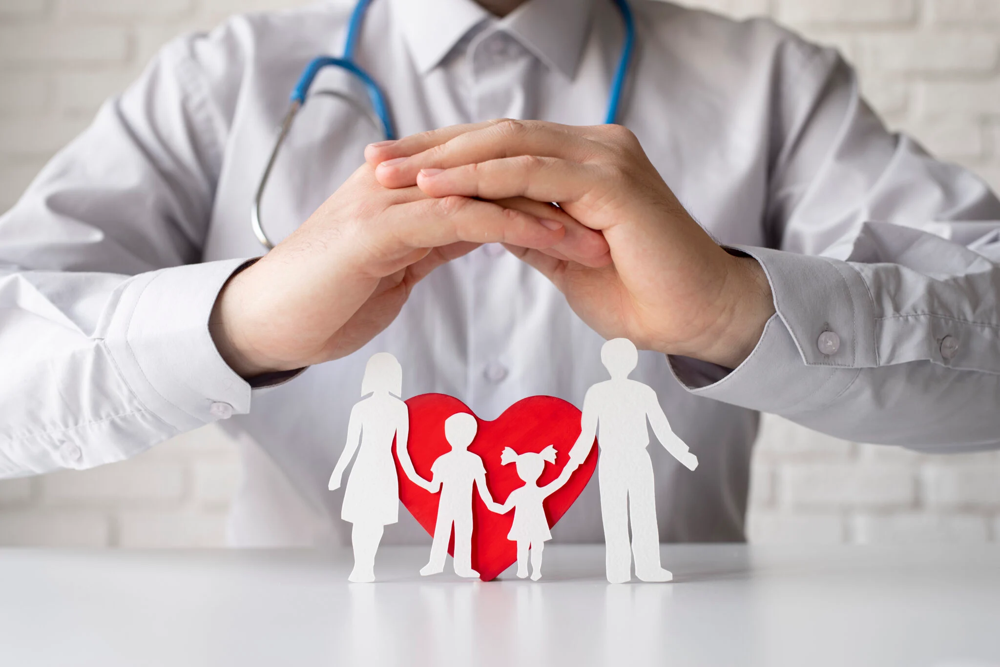

Capacita Juventude
Curso profissionalizante para jovens em situação de vulnerabilidade.

Meta: R$ 15.000
Alimente a Esperança
Campanha de distribuição de cestas básicas e refeições.

Meta: R$ 8.000
Saúde para Todos
Clínicas móveis e ações de prevenção em comunidades.
Meta: R$ 20.000